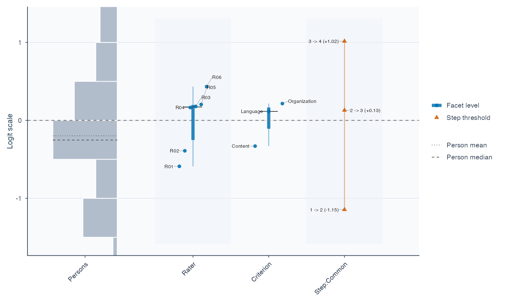

Account for rater differences. Plan your assessment. Report the results.
The same performance can receive different scores from different raters. For speaking performances, essays and other rated work, mfrmr helps you:
- Measure performance: estimate person ability while accounting for rater severity and task or criterion difficulty.
- Plan ratings: compare what adding raters or tasks would do to score precision.
- Explain results: examine agreement and prepare tables, figures and reports for researchers or raters.
Explore the published interactive gallery (0.2.4): inspect values, compare rating plans, and reuse the ggplot2 code in your report.
Install and choose matching documentation
The CRAN release is 0.2.4 (published 2026-10-30). Install it with:
install.packages("mfrmr")
browseVignettes("mfrmr")The published documentation website currently describes 0.2.4. Use those tutorials with that release.
The examples below describe development toward 0.3.0 (0.2.4.9000). To install this development revision from a source checkout, follow the source-build steps to produce mfrmr_0.2.4.9000.tar.gz, including the five core tutorials. Building tutorials requires R Markdown and Pandoc. Then, from the directory containing that archive, install it in R:
install.packages("mfrmr_0.2.4.9000.tar.gz", repos = NULL, type = "source")Source installation requires R build tools. Check packageVersion("mfrmr") in a fresh R session before following the examples. Before updating existing scripts, open help("mfrmr_api_migration_030"). The development source includes five core offline tutorials: workflow, model choice, G theory, visual diagnostics and reporting. Use the development documentation with this development version, and the stable website with CRAN 0.2.4.
Start the interactive tour to follow one assessment from rating data to diagnostics, rater feedback, assessment planning and a saved report. You can explore the figures before running R. To start with your own data, follow the data and design section.
Try one assessment
Start with synthetic data for 48 people, six raters and three criteria. Each person is assigned two raters; 282 of 288 planned ratings are observed. Here, interpret 1 as lower performance and 4 as higher performance.
library(mfrmr)
ratings <- load_mfrmr_data("example_operational")
head(ratings[c("Person", "Rater", "Criterion", "Score")], 3)| Person | Rater | Criterion | Score |
|---|---|---|---|
| P001 | R01 | Language | 4 |
| P001 | R01 | Organization | 2 |
| P001 | R02 | Content | 4 |
One row is one observed rating. Missing ratings are absent rows, not zeros. A facet is a source of variation: here, the rater and assessment criterion.
Fit a rating-scale model (RSM), which uses shared category steps across criteria, by marginal maximum likelihood (MML). For your assessment, see the vignette("mfrmr-model-choice", package = "mfrmr").
fit <- fit_mfrm(
ratings, person = "Person", facets = c("Rater", "Criterion"), score = "Score",
rating_min = 1, rating_max = 4, category_policy = "preserve",
method = "MML", model = "RSM",
population_formula = ~ 1, person_data = unique(ratings["Person"])
)
analysis <- mfrm_results(fit, include = "publication") # Gather diagnostics and tables
check <- summary(analysis)
check$decision[, c("FormalInference", "NextAction")]This example estimates the ability population’s mean and SD while centering rater, criterion and step parameters. The legacy RSM/PCM defaults instead fix the population to N(0,1) and center all these locations. That combination constrains the overall score level as well as the population spread; it is appropriate only when those assumptions are intended. See ?fit_mfrm for mean-only estimation and alternative location constraints.
Here, FormalInference is No: estimation completes, but the current estimated-population route does not complete the fit-readiness identification review. Treat the estimates and figure below as descriptive, and inspect check$decision before using an interval or making an inferential claim. Even Yes means only that the implemented numerical and precision-method checks pass under the chosen model; it does not establish model adequacy, finite-sample coverage for your design, or construct validity. Ordinary RSM/PCM Stan export currently requires a fixed N(0,1) population; it rejects this estimated-population fit rather than silently changing its model.
Read the first figure
plot(fit, show_ci = FALSE)
Start with Rater: R01 is about −0.59 and R06 about +0.43 logits. Higher rater locations mean lower expected scores for the same person and criterion, so R06 is estimated to score more severely. Zero is a centered reference, not a quality standard; point estimates alone do not establish a statistically significant difference. The IQR bars describe spread, not uncertainty.
The left panel shows person estimates; other columns show criteria and category steps. Open vignette("mfrmr-visual-diagnostics", package = "mfrmr") for interpretation. State what high scores mean: difficulty in understanding and ease of understanding run in opposite directions.
Make a report and keep the analysis
report <- mfrm_report(analysis, style = "apa", output = "html")
browseURL(report$path) # Open the draft report in your browser
export_mfrm_results(analysis, output_dir = "assessment-export", preset = "starter")The report combines results, checks and draft wording; the export saves tables, available figures and a reloadable analysis. Open assessment-export/index.html to navigate the saved files. Add your study question, sampling, rubric and interpretation. Review person-level information before sharing.
vignette("mfrmr-reporting-and-apa", package = "mfrmr") introduces three editable manuscript templates:
| Your question | Template |
|---|---|
| Report a one-family GPCM analysis |
gpcm-report.Rmd: measures, precision, fit, agreement and figures. |
| Compare rater/task plans |
gtheory-report.Rmd: sources of variation, plans and uncertainty. |
| Review anchors, bias or model choice |
assessment-review.Rmd: select the relevant modules. |
Templates require R Markdown and Pandoc; the HTML report above does not. The guide distinguishes separation, Strata and reliability from observed agreement (Krippendorff’s alpha and pairwise Cohen’s kappa).
Choose your next task
Run these commands in the R session using the version installed above. For the visual tour, use the development website’s Get started entry or vignettes/articles/mfrmr.Rmd in the matching source checkout.
| Task | Documentation for your installed version |
|---|---|
| Use your own CSV | vignette("mfrmr-workflow", package = "mfrmr") |
| Plan the number of raters or tasks | vignette("mfrmr-gtheory", package = "mfrmr") |
| Interpret facet intervals | help("mfrm_facet_intervals") |
| Review rating networks and residual patterns |
help("mfrm_network_analysis"); help("mfrm_residual_network")
|
| Choose a model |
vignette("mfrmr-model-choice", package = "mfrmr"); help("mfrmr_gpcm_scope")
|
| Reuse a calibration or compare external software |
help("mfrm_calibration_workflow"); help("facets_guide"); help("build_conquest_overlap_bundle")
|
| Continue in Stan/brms and report saved estimates |
help("export_mfrm_model"); help("read_mfrm_posterior")
|
In R, use mfrmr_output_guide("beginner") to choose an entry point.
Updating, scope and citation
Installing a new version does not update saved calculations. Keep originals and follow NEWS and help("mfrmr_api_migration_030") for the 0.2.4-to-0.3.0 transition. Earlier saved-object guidance remains in help("mfrmr_workflow_methods"). For retired drawing helpers, see help("mfrmr_plot_migration"); plot() is the main entry point.
Native measurement models use one ordered score scale and one latent person dimension. Two-family GPCM and other experimental routes have separate limits in the model guides. G/D studies concern variation in defined observed scores. The roadmap separates current capabilities from future work.
Use citation("mfrmr") and the methodological references in the relevant help. For reproducible numerical checks, historical results and their limits, see the validation evidence guide. A passing software test is distinct from a repeated-sampling coverage study. Licensed under the MIT License.
mfrmr has benefited from discussion and methodological input from Dr. Atsushi Mizumoto and Dr. Taichi Yamashita.